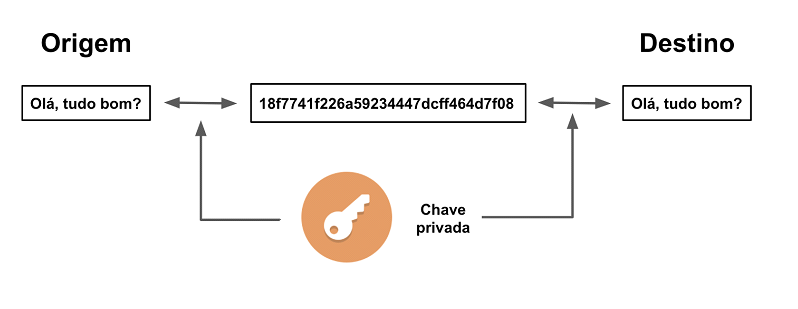
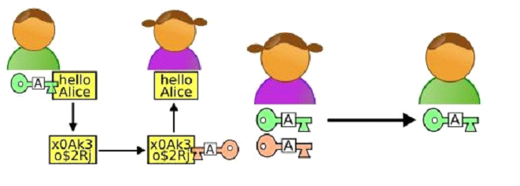

[by Belt]
ad8888888888ba
dP' `"8b,
8 ,aaa, "Y888a ,aaaa, ,aaa, ,aa,
8 8' `8 "88baadP""""YbaaadP"""YbdP""Yb
8 8 8 """ """ "" 8b
8 8, ,8 ,aaaaaaaaaaaaaaaaaaaaaaaaddddd88P
8 `"""' ,d8""
Yb, ,ad8" [ Fundamentos da Criptografia ]
"Y8888888888P"
[1] Introdução:
Neste artigo passarei uma visão geral sobre a criptografia, explorando seus princípios fundamentais e algoritimos, como criptografia simétrica e assimétrica e suas aplicações em diferentes contextos.
A criptografia é uma área da segurança da informação que envolve a técnica da transformação de dados para um formato ilegível, ou seja, criptografado, usando algoritmos e chaves de criptografia.
Esse processo é importante para a confidencialidade, integridade e autenticidade dos dados, fazendo com que eles se tornem inacessíveis à pessoas não autorizadas que não possuam a chave correta
para descriptografar as informações. A criptografia desempenha um papel crucial na segurança de sistemas de comunicação, transações financeiras, armazenamento de dados sensíveis e na proteção da
privacidade digital. Ela é uma ferramenta fundamental na sociedade digital para garantir que as informações confidenciais permaneçam seguras de pessoas não autorizadas ou mal intencionadas.
[2] CRIPTOGRAFIA COM ALGORÍTIMOS SIMÉTRICOS

Na criptografia simétrica existe apenas uma chave, tanto para criptografar um dado, tanto para descriptografá-lo.
E isso é o que à diferência da criptografia assimétrica. Dentro deste escopo, temos vários tipos de algorítimos para a criptografia de dados, tais como:
- AES (aes128, aes192, aes256)
- Blowfish
- Serpent
- Twofish
- RC4
Cada uma podendo ser mais útil ou menos útil dependendo da finalidade na qual se é necessário criptografar os dados. Dentre essas vantagens,
temos a complexidade algorítmica, a memória utilizada, o tamanho da chave, entre outros…
Por exemplo, a criptografia AES é comumente usada de várias maneiras, incluindo segurança sem fio, segurança do processador, criptografia de arquivo e SSL / TLS.
E para quebrar uma chave AES de 256 demoraria muito mais do que um humano possa viver, devido a sua complexidade.
[3] CRIPTOGRAFIA COM ALGORÍTIMOS ASSIMÉTRICOS?

Já na criptografia assimétrica existem duas chaves, uma para criptografar o dado e outra para descriptografá-lo.
Como na criptografia simétrica, na assimétrica também temos diversos algorítimos, como DSA, RSA e ElGamal.
Assim como a Chave Simétrica, a Assimétrica também tem seus problemas. A utilização de algoritmos reversos
para desencriptação de mensagens acaba por elevar o tempo computacional dos algoritmos de criptografia assimétrica,
tornando inviável o seu uso em uma comunicação frequente.
[4] Misturando Ambos Algorítmos
Ambos os tipos de Chaves tem suas vantagens e desvantagens, assim foram originados algorítmos que combinam ambos os tipos de chaves, eliminando assim, suas desvantagens.
Os protocolos TLS (Transport Layer Security) e SSL (Secure Sockets Layer) são exemplos dessa junção. Para eliminar o problema do segredo estabelecido previamente da chave
simétrica e o alta demanda computacional necessária na chave assimétrica. Assim fizeram de forma em que seja utilizada primeiro a criptografia assimétrica, autenticando
assim os laços e combinando uma chave secreta para utilizar futuramente na criptografia simétrica. Como o algoritmo de chave pública garante que a negociação foi realizada
em um canal seguro, não havendo a necessidade da troca da chave como na Chave Simétrica, todo o restante do processo pode passar a ser realizado utilizando algoritmos de chave
simétrica, o que diminui potencialmente a necessidade da demanda computacional, permitindo seu uso em uma comunicação mais intensa (problemas encontrados na Chave Assimétrica).
Escrito por Arthur Mendes (Belt)
- ass Digitall H3ll <3